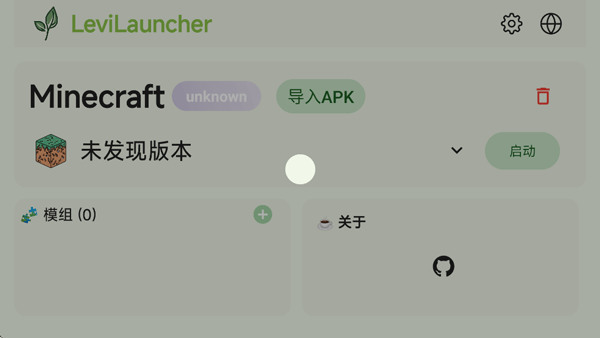

那个晚上我差点把 Minecraft 存档删了——直到发现 LeviLauncher
一个折腾 Bedrock Mod 差点搞崩整个游戏环境的深夜自救故事，隔离版本加一键开关到底救了我多少脑细胞。
凌晨两点，我盯着启动界面发呆
那是个普通的周二深夜，我蹲在电脑前想给《我的世界》基岩版加个新的光影包。白天在视频里看到的那个水面反光效果太诱人了，作者特意说支持最新正式版，我没多想就把文件拖进了游戏目录。
然后就是经典一幕：启动器转圈三分钟，游戏黑屏十秒，闪退。
我当时的反应和大多数玩家一样——卸游戏重装。Microsoft Store 卸载、删残留、重新下载、安装……折腾了快一个小时，装完之后启动，游戏还是崩。那一瞬间我甚至怀疑自己的存档是不是也跟着没了。
朋友说的那个启动器，我本来没在意
第二天早上翻论坛，看到有人提到 LeviLauncher，它的官网上有详细的功能介绍。说实话我之前对启动器这类工具不太感冒，觉得不就是帮你打开游戏的壳子吗？但那位发帖的老哥刚好说了我遇到的同款问题——装了 Mod 之后 Store 版游戏直接废了，他是靠这个启动器的隔离版本功能救回来的。
反正已经烂成这样了，我抱着试试看的心态从官方下载页面拉了一份。安装界面比想象中干净，没有花里胡哨的广告条，就是几个大按钮让你创建托管版本。我当时没太理解「隔离」两个字的分量，随手点了创建，选了一个和我原来装的版本号一致的正式版。
下载花了二十多分钟。说实话那段时间我挺焦虑的——万一这玩意儿也不行怎么办？
第一次打开，我发现自己之前干了多少蠢事
托管版本启动之后，游戏没崩。就这么简单。
我在那个隔离出来的环境里测试了之前让 Store 版崩掉的光影包，正常运行，水面反光确实好看。然后我又试了另一个之前装过就报错的行为包，也没问题。那一瞬间我才反应过来，我之前的问题根本不是 Mod 本身有毛病，而是直接往 Store 的游戏本体目录里塞文件，搞坏了 Store 版依赖的那套组件结构。
用 LeviLauncher 管理的版本，每个都是独立的——自己的游戏文件、自己的资源包目录、自己的 Mod 文件夹，和 Store 原装完全隔离开。想折腾什么就折腾什么，最多搞坏这一个隔离版本，删了重开一个就行，Store 本体永远安然无恙。
Mod 管理那页，让我想起了曾经被崩溃支配的恐惧
真正让我觉得这个工具不只是个启动器的，是它的 Mod 管理页面。
之前我加 Mod 的方式堪称野路子——解压、拖文件、祈祷别崩。现在打开 LeviLauncher 的 Mods 页，每个已导入的 Mod 都整整齐齐列在那儿，左边一个复选框，勾上就是启用，取消就是禁用。没有删除按钮那种一失足成千古恨的慌张，想排错就先禁用，确认没用了再删也不迟。
让我印象最深的是它LeviLauncher文档里写的那个二分法排错思路。我之前同时开了六七个 Mod，有一个让游戏偶尔崩，我完全不知道是哪个。按照 LeviLauncher 说的，我先禁用一半测试，崩了就说明问题在剩下那三个里；再禁用其中两个，剩下一个单独跑——三次二分之后定位到了一个渲染 Mod，和我新下的光影包冲突。整个过程不到五分钟，换以前我得一个一个试，能耗上大半小时。

.dll Mod 那页我至今还没敢碰
看到文档里讲原生 Mod 那节的时候我停了一下。.zip 格式的 Mod 是行为包和资源包，本质上是改配置和贴图，风险可控。但 .dll 原生 Mod 不一样——它要 hook 游戏底层逻辑，能力强了不止一个量级，搞不好真能让存档损坏。
LeviLauncher 对这种高风险操作的态度我觉得挺合理的：不拦着你用，但前提条件列得清清楚楚——必须是 x64 的隔离版本、桌面版 Visual C++ 运行时要装好、原生加载器 LeviLamina 会自动引导安装。文档里甚至直接写了警告：每次加新 .dll Mod 之前先备份。
我目前还没用到 .dll Mod，但光看 LeviLauncher 把这些风险前置、步骤讲得这么细，就让人觉得它不是那种糊弄事的玩具工具，是真有人在用、真有人踩过坑之后总结出来的工作流。
那些我之前不知道自己需要的小细节
用了快一个月之后，我才慢慢注意到 LeviLauncher 里藏着的那些贴心设计。
比如它会自动检测 Windows 里 Gaming Services 装没装、GameInput 组件状态正常不正常。我之前 Store 版崩了之后修了好久，根本不知道是 Gaming Services 被 Windows 更新冲掉了。LeviLauncher 在 Components 分区里直接把所有运行依赖列出来，哪个亮绿哪个黄一眼就能看明白，点一下还能自动触发修复流程。
又比如它在文档里专门留了一节讲磁盘空间怎么算——每个隔离正式版预留 5 到 10GB、预览版 3 到 8GB、Mod 工作区额外 2 到 5GB，建议把路径放在 SSD 上。这种细节不会在安装向导里提，但真到磁盘不够的时候就会想起来。
写完这篇的时候，我正在装第八个隔离版本
回头看，那天晚上差点删掉存档的经历其实挺有代表性的——很多 Bedrock 玩家想折腾 Mod 又怕折腾坏，Store 版的游戏本体和 Mod 的隔离做得不好，就容易陷入「加一个 Mod → 崩 → 卸游戏 → 重装 → 还是崩」的死循环。LeviLauncher 把这个循环给打破了：隔离版本让你敢折腾，Mod 开关让你好排错，组件检测让你少踩系统环境的坑。
我现在电脑上同时跑着好几个隔离版本——一个用来测光影包，一个专门装朋友给的行为包合集，还有一个干净的什么 Mod 都不加就纯玩生存。Store 原版安安静静待在那儿，从没被我碰坏过。
这种「想怎么折腾就怎么折腾，出事了也不会伤到根本」的感觉，大概就是折腾党最想要的状态吧。
对了，关于这个启动器的详细说明和相关资料，我整理了一份同步放在了三个仓库里，GitHub、Gitee 和 GitCode 都能访问，有需要的朋友可以挑国内能打开的那份去看。